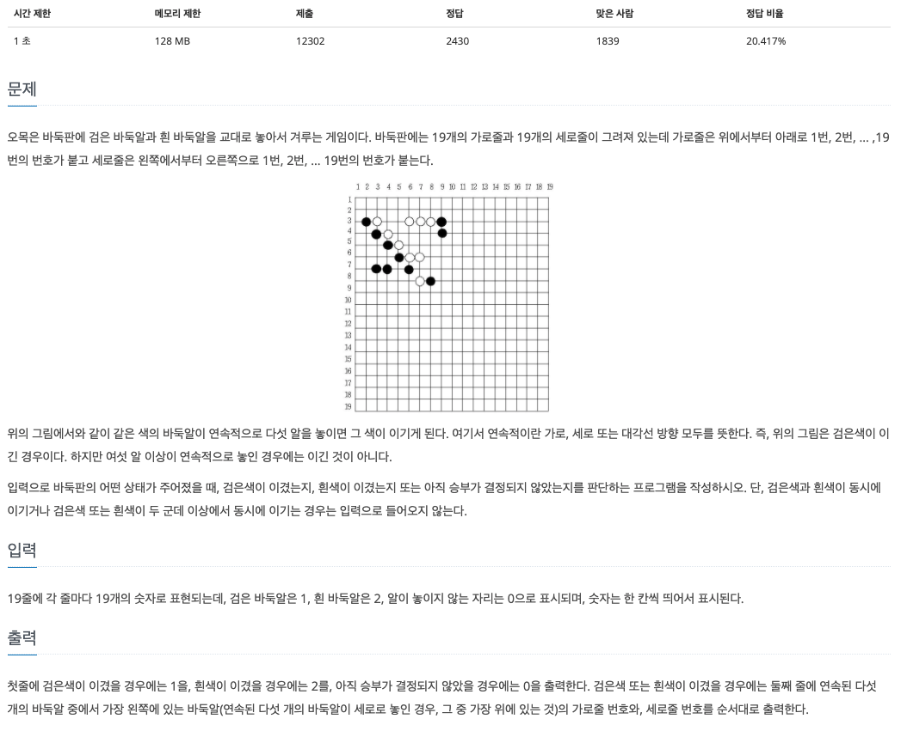
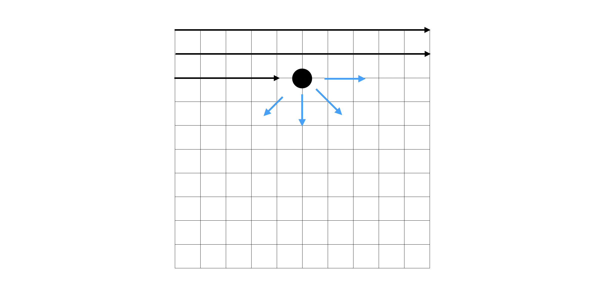

[Algorithm] 2차원 배열
자바스크립트에서 이차원배열을 다루는 문제들을 푸는 방법을 정리했습니다
2차원 배열
▶️ 2차원 배열의 생성
2차원 배열을 생성하는 방법에는 몇가지가 있다
1. push
빈 배열을 선언하고 push 하는 방법
const arr = new Array();
for (let i = 0; i < 4; i++){
arr.push(Array(4).fill(0));
}
2. map
크기가 지정된 배열을 선언하고 map을 이용해서 배열로 바꿔주는 방법
const arr = new Array(4).fill(null).map(() => Array(4).fill(0));
3. Array.from
Array.from은 첫번째 인자로 배열을 받고 두번째 인자로는 map과 동일하게 각 요소에 적용할 홤수를 인자로 입력받는다
const arr = Array.from(Array(4), () => Array(4).fill(0));
Array.from은 얉은 복사 된 새로운 객체를 생성한다
▶️ 2차원 배열 문제
보통 2차원 배열의 문제는 인덱스를 다루는 문제가 주를 이룬다
1. 모든 경우를 다 도는 문제
n*n 크기의 격자판에서 가로 세로의 합이 가장 큰 경우를 반환하는 문제
const solve = (board) => {
// 가로의 길이
const len = board.length;
// 결과를 저장할 변수
let result = 0;
// 각각 가로세로의 합을 저장할 임시 배열
const tempArr = new Array(len*2).fill(0);
// 모든 경우를 탐색한다
for (let i = 0; i < len; i++){
for (let j = 0; j < len; j++){
tempArr[i] += board[i][j];
tempArr[j+len] += board[i][j];
}
}
result = Math.max(...tempArr);
return result;
}
- 각 가로 세로의 합을 저장할 임시 배열을 생성하고, 이중 for문을 이용해서 모든 경우를 탐색하며 임시 배열에 더해준다
- 암사 해열을 펼침 연산자(
...)를 이용해서 가장 큰 수를 구해준다
2. 플러드 필(Flood Fill)
플러드 필이란 다차원 배열에서어떤 칸과 연결된 영역을 찾는 알고리즘이다
주위(상하좌우)보다 큰수의 위치를 찾는 문제
const solve = (nums) => {
const len = nums.length;
let answer = [];
// 상하좌우의 인덱스 계상을 하기 위한 배열
const dx = [1, 0, -1, 0];
const dy = [0, 1, 0, -1];
// 모든 요소를 탐색
for (let i = 0; i < len; i++){
for(let j = 0; j < len; j++){
flag = true;
// 플로드 필(상하좌우를 확인한다)
for (let k = 0; k < dx.length; k++){
nx = i+dx[k];
ny = j+dy[k];
if(nx >= 0 && nx < len && ny >= 0 && ny < len){
if(nums[i+dx[k]][j+dy[k]] >= nums[i][j]){
flag = false;
break;
}
}
}
if(flag === true) answer.push([i, j]);
}
}
return answer;
}
- 이중 for문을 이용해서 모든 요소를 탐색한다
- 플로드 필을 이용해서 상하좌우 인덱스를 확인한다
- 만약 현재 인덱스가 (0, 0)이라면 배열에서 (0, -1)인덱스를 탐색할 수 없다
- out of range!
- 현재 요소가 상하좌우 요소보다 크면 결과배열(answer)에 push 한다
3. 플러드 필을 응용한 문제 (백준 - 오목)
백돌과 흑돌중 이긴 사람을 출력하는 문제
백준 2615 - 오목문제

접근방향
플로드 필을 이용해서 한 방향으로 진행하며 카운팅이 5가 되거나, 다른 돌 또는 공백이 있으면 break한다

for문을 통해 위에서부터 순차적으로 탐색이 진행되므로 4가지 방향만 탐색하면 된다 (반대 방향으로 진행해도 같다)
const fs = require("fs");
const filePath = process.platform === 'linux' ? '/dev/stdin' : './2615.txt';
let board = fs.readFileSync(filePath).toString().trim().split("\n");
board = board.map(item => item.split(" ").map(item2 => +item2));
const solve = (board) => {
const len = board.length;
// →, ↘︎, ↓, ↙︎ 방향으로 진행하기 위한 배열
const dx = [0, 1, 1, 1];
const dy = [1, 1, 0, -1];
for(let i = 0; i < len; i++){
for(let j = 0; j < len; j++){
if(board[i][j] !== 0){
// 현재 돌(1 or 2)을 저장하기 위한 변수
temp = board[i][j];
for(let k = 0; k < dx.length; k++){
x = i;
y = j;
nx = i + dx[k];
ny = j + dy[k];
cnt = 1;
while(true){
// 만약 다음 인덱스가 범위를 벗어나면 break
if(nx < 0 || nx >= len || ny < 0 || ny >= len) break;
// 다음 돌이 다른 돌이라면 break
if(board[nx][ny] !== temp) break;
nx += dx[k];
ny += dy[k];
cnt++;
if(cnt === 5){
// 진행방향의 반대편이 같은 돌이라면 break (6개 이상이 되는 경우)
if(x-dx[k] >= 0 && x-dx[k] <= len-1 && y-dy[k] >= 0 && y-dy[k] <= len-1){
if(board[x-dx[k]][y-dy[k]] === temp) break;
}
// 다음돌이 같은 돌이라면 break (6개 이상이 되는 경우)
if(nx >= 0 && nx < len && ny >= 0 && ny < len) {
if(board[nx][ny] === temp) break;
}
// 이긴사람 (temp)
console.log(temp);
// 오른쪽 하단으로 진행하는 경우 가장 왼쪽돌을 출력
if(k === 3) console.log(i+5, j-3);
else console.log(i+1, j+1);
return;
}
}
}
}
}
}
console.log(0);
return;
}
solve(board);
- 이중 for문을 사용해서 전체의 경우를 탐색
- 0이 아닌 흰돌 또는 검은 돌을 만났을 때 4가지 경우를 확인(플러드 필)
- 각각의 방향을 확인하면서 돌이 6개 이상이 되는 경우를 제거 (인덱스를 이용)
- 위 과정을 반복하면서 오목이 완성된 곳의 인덱스와 승자를
console.log()로 출력